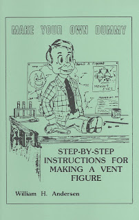

"Make Your Own Dummy"
2/2/2010
Terry Ottinger referred to this book in the post below, telling how he used Magic Sculp (rather than wood dough) to construct the head. Excellent advice, I believe - I think I'll try
Plans, instructions, diagrams, photos! By professional figure maker, William H. Andersen. Long time best seller! Illustrated by the author. Included are diagrams for standard animations (moving mouth and side to side moving eyes, plus several extra effects (eye closers or winkers, raising eyebrows, upper lip movement, stick out tongue, wiggling ears, hair raiser, hand shaker, knee lifter, heart thumper). If you have a workshop and are handy with your hands, you’ll find this book perfect for your needs. Or, if you’re just curious as to what makes a ventriloquist figure "tick" you’ll find this an informative and fascinating read.
* * * * *
Give-Away: By today's drawing, this copy of Make Your Own Dummy has been awarded to Clayton Delong (who now has 14 days to contact me and claim his prize).
If you have not not signed up to be eligible for all gift/prize drawings, you can do so now by sending me your name to mahertalk@aol.com . There is no cost; no obligation. Join the fun!
To Purchase: I sell Make Your Own Dummy for $10.00 Postpaid. Contact me by email to order. I can either send you a PayPal money request, or you can mail me your check or money order.
{kind=link}

it myself. This 40 page book is actually as set of instructions on how to build a professional ventriloquist figure using ordinary materials and tools.Plans, instructions, diagrams, photos! By professional figure maker, William H. Andersen. Long time best seller! Illustrated by the author. Included are diagrams for standard animations (moving mouth and side to side moving eyes, plus several extra effects (eye closers or winkers, raising eyebrows, upper lip movement, stick out tongue, wiggling ears, hair raiser, hand shaker, knee lifter, heart thumper). If you have a workshop and are handy with your hands, you’ll find this book perfect for your needs. Or, if you’re just curious as to what makes a ventriloquist figure "tick" you’ll find this an informative and fascinating read.
* * * * *
Give-Away: By today's drawing, this copy of Make Your Own Dummy has been awarded to Clayton Delong (who now has 14 days to contact me and claim his prize).
If you have not not signed up to be eligible for all gift/prize drawings, you can do so now by sending me your name to mahertalk@aol.com . There is no cost; no obligation. Join the fun!
To Purchase: I sell Make Your Own Dummy for $10.00 Postpaid. Contact me by email to order. I can either send you a PayPal money request, or you can mail me your check or money order.